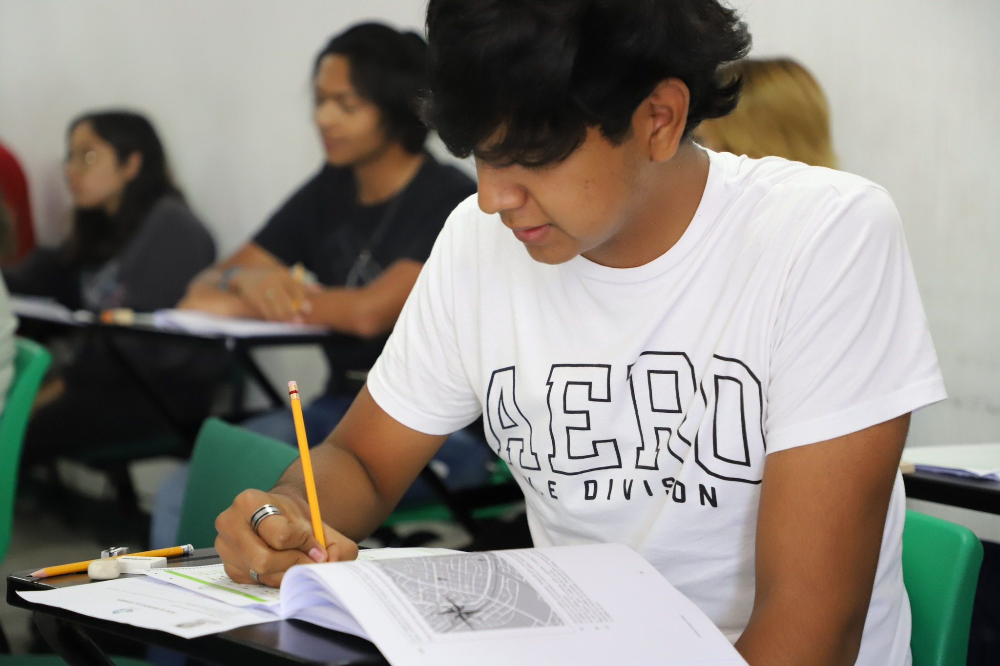

Biblioteca virtual
Posibilidad de compartir material de apoyo previamente validado y autorizado por profesores de las materias correspondientes, tal como notas, formularios, consejos, proyectos y demás contenido para facilitar y refrescar de ideas la mente de los estudiantes.
Comparte tu aporte validado por un maestro aqui
